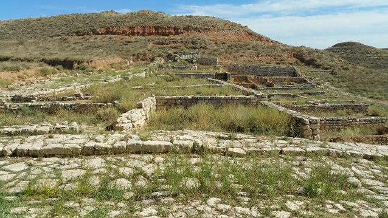
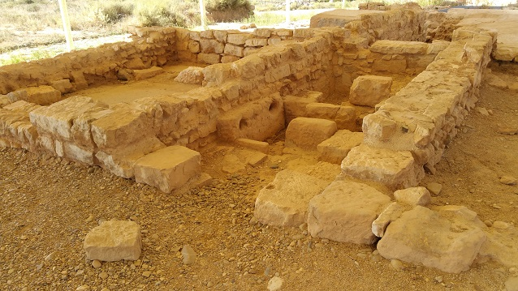
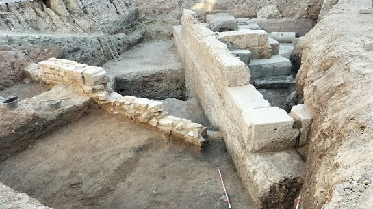

Colonia Lépida-Celsa
La Colonia Lépida Celsa se localiza
en el término municipal de Velilla de Ebro.
Marco Emilio Lépido, fundó esta colonia en el año 44 a.e.c., en la
margen izquierda del río Ebro, en lo que era un poblado íbero de los
ilergetes llamado Kelse. La colonia fue bautizada con su nombre, Victrix
Iulia Lépida.
La nueva población formada con licenciados de las legiones y nativos,
tuvo una extensión de unas 44h. Desempeñó un papel fundamental como nudo
de comunicaciones, por estar situada en la vía Augusta y comunicar
Tarraco con el Valle del Ebro.
La colonia llegó a contar con 4.000 habitantes.
Lépido fue apartado de sus cargos políticos y acabó desterrado en el año
36 a.e.c. por Octavio Augusto. La colonia cambio de nombre. Su nuevo
nombre fue el de Victrix Iulia Celsa, latinizando su nombre indígena
original de Kelse.
Su periodo de esplendor fue breve. En época de Nerón empezó a decaer y
se fue abandonando. No se sabe el motivo de su decadencia aunque es
probable que estuviera relacionada con los cambios económicos y
administrativos derivados de la creación de la colonia Caesaraugusta,
que monopolizó los principales flujos comerciales.
 |
 |
En las excavaciones Se han sacado a
la luz barrios enteros, con sus calles perfectamente pavimentadas con
tramos importantes del cardo y del decumano, orientados con los cuatro
puntos cardinales y manzanas de viviendas. Las calles no tenían
alcantarillado. Destaca la Casa de los Delfines, la Casa del emblema
Blanco y Negro, La casa de la Tortuga. Sus estancias estaban decoradas
con mosaicos y pinturas, han aparecido numerosos objetos relacionados
con la vida cotidiana de sus habitantes.
Se han descubiertos aljibes y distintos establecimientos comerciales:
almacenes, tiendas, un mercado y una panadería.
Se han localizado los emplazamientos de posibles edificaciones
religiosas, del teatro, del foro, las termas, necrópolis, panaderías,
restaurantes y otros edificios públicos.
En la excavación se hallaron numerosos restos cerámicos, como lucernas,
platos, bronces, restos escultóricos, monedas y pequeñas piezas de
orfebrería.

En marzo de 2023, una cata arqueológica en la plaza
de España de la localidad zaragozana de Velilla de Ebro, ha sacado a la
luz los restos de un edificio monumental de época romana. Los restos
hallados se asocian al foro romano de la ciudad.
En junio de 2024 las excavaciones arqueológicas en la plaza mayor de
Velilla de Ebro han terminado y han servido para concluir que los restos
aparecidos en los últimos meses en el corazón de la localidad
corresponden a un foro romano. Se establece así un curioso paralelismo
entre Zaragoza y Velilla. "El foro, que se andaba buscando
tradicionalmente en el centro de la colonia Lépida Celsa, lo colocaron
los romanos cerca del río, como en Zaragoza. Parece que pueda ser de
época de Augusto o quizá de Tiberio. Foto: Heraldo.es

| MENÚ | ZARAGOZA ROMANA | |
| HISPANIA |